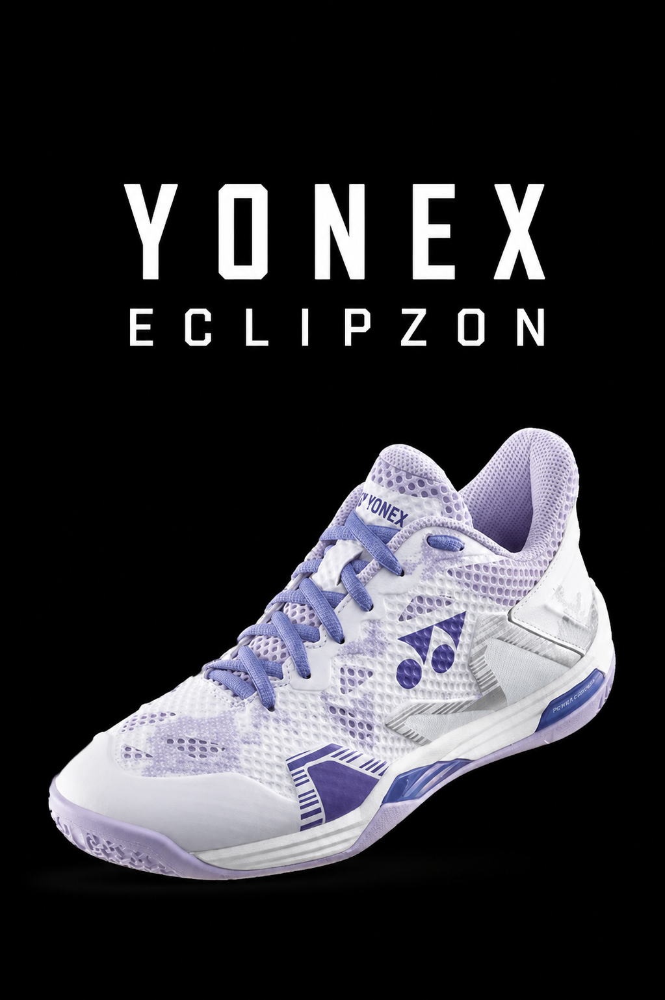

YONEX ECLIPZON

The Yonex Power Cushion Eclipsion series is a premium line of court shoes designed for women, highly regarded
for its stability, support, and shock absorption. Available for both tennis and badminton, they are engineered
to help athletes make sharp cuts and quick lateral movements safely.
KEY FEATURES AND TECHNOLOGIES:
- Power Cushion+: Absorbs shock from intense footwork and returns impact energy for a faster,
springier push-off.
- Feather Bounce Foam: A lightweight cushioning material integrated into the midsole to add
bounce without the bulk.
- Double Raschel Mesh: An ultra-fine, highly breathable mesh upper that keeps your feet cool
and dry during long matches.
- Toe Assist Shape: Designed to reduce pressure on the big toe while providing better support
and fit for the midfoot and heel.